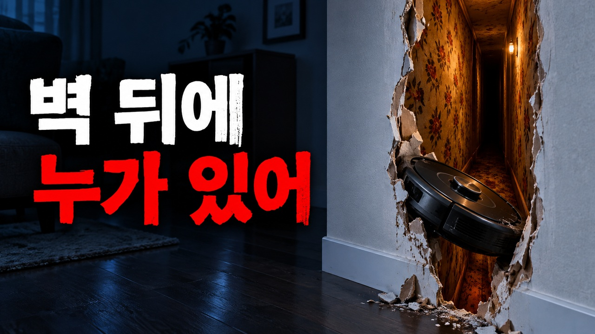
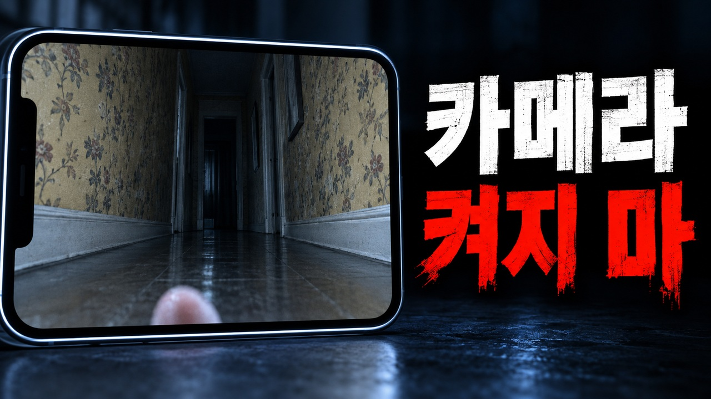

본편 확인
화면 자막 없는 클린 버전입니다. 업로드할 때 SRT 또는 VTT를 함께 등록하세요.
썸네일 2종
A는 숨은 공간, B는 금지된 카메라를 강조합니다. 제목과 같이 미리 보고 선택하세요.
{kind=link}

{kind=link}

메인 제목
로봇청소기 지도에 없는 방이 생겼다. 관리인은 카메라를 켜지 말라고 했다 | 아파트 괴담
추천 제목 5가지
1. 전 세입자가 버린 로봇청소기, 새벽마다 벽 속을 청소했다 | 창작 공포 2. 우리 집은 방이 두 개인데, 청소기 지도에는 세 개가 떴다 | 소름 돋는 이야기 3. 새벽 2시 13분, 로봇청소기가 발견한 안쪽 방 | 아파트 괴담 4. 청소기 솔에 감긴 꽃무늬 벽지… 우리 집 벽지는 전부 흰색이었다 5. 관리인이 로봇청소기를 보자 굳었다. “그 기계, 아직도 있었어요?”
설명란
우리 집은 거실과 방 두 개가 전부였어요. 그런데 로봇청소기 지도에, 외벽을 통과해야 들어갈 수 있는 방이 생겼습니다. 관리인은 그 기계를 보자마자 카메라만은 절대 켜지 말라고 했어요. 이어폰으로 들으면 작은 기계음과 벽 안의 소리가 더 선명하게 들립니다. 타임스탬프 00:00 전 세입자가 남긴 청소기 00:49 새벽에 발견한 공간 02:26 꺼 둔 기계가 움직인 밤 03:01 관리인의 경고 04:16 밀가루 위의 바퀴 자국 04:40 실시간 카메라 06:42 다음 날 벽을 뜯었다 07:04 다른 집으로 이사한 뒤 작품 안내 이 영상은 창작 공포 이야기입니다. 실제 사건·특정 제품의 결함을 주장하는 영상이 아닙니다. 내레이션과 장면 이미지에는 AI 제작 도구를 사용했습니다. 어둠 속 이야기 https://www.youtube.com/@EodumStory 채널의 ‘주거 괴담’ 또는 ‘현대 기기 괴담’ 재생목록에서 다음 이야기를 이어 들어 주세요. 여러분이라면 카메라를 켰을까요, 집을 나갔을까요? 댓글로 남겨 주세요. #무서운이야기 #괴담 #아파트괴담 #로봇청소기 #창작공포 #어둠속이야기
태그
무서운이야기,공포이야기,괴담,아파트괴담,로봇청소기괴담,창작공포,도시괴담,현대괴담,주거괴담,안쪽방,숨겨진방,공포라디오,괴담낭독,한국괴담,어둠속이야기,소름돋는이야기,잠들기전이야기
고정 댓글
여러분이라면 ① 카메라를 켠다 ② 집을 나간다, 어느 쪽인가요? 다음 이야기는 채널의 주거 괴담에서 이어집니다. 제보는 개인정보를 지우고, 각색·영상화 허용 여부와 함께 남겨 주세요.
X 홍보글
로봇청소기 솔에 꽃무늬 벽지가 감겨 나왔습니다. 그런데 우리 집 벽지는 전부 흰색이었어요. “그 기계, 아직도 그 집에 있었어요?” 새 창작 괴담, 어둠 속 이야기에서. [게시 후 본편 URL 추가] #괴담 #무서운이야기
Threads 홍보글
집은 방 두 개였는데 청소기 지도에는 세 번째 방이 생겼어요. 고객센터에는 그 안에서 칠 분을 돌아다녔다는 기록까지 남아 있었죠. 관리인이 한 말은 딱 하나였습니다. “카메라는 켜지 마요.” 여러분이라면 확인하시겠어요? 창작 공포 본편: [게시 후 URL 추가]
Instagram 홍보글
우리 집에 없는 방을, 청소기는 알고 있었습니다. 새벽 두 시 십삼 분. 지도에 다시 나타난 ‘안쪽 방’. 오늘의 창작 괴담은 프로필의 유튜브 링크에서 확인하세요. #무서운이야기 #괴담 #창작공포 #아파트괴담 #어둠속이야기
추천 게시 시간
기본 추천: 일요일 오후 10시(KST), 이번 후보는 2026년 9월 13일 22:00. 채널 시청자 분석이 없는 상태의 운영 기준이며 최적 성과를 보장하는 시간은 아닙니다. 실제 업로드 예약은 아직 하지 않았습니다. Studio 시청자 활동 데이터가 쌓이면 활발한 시간보다 30~60분 앞당겨 조정하세요.